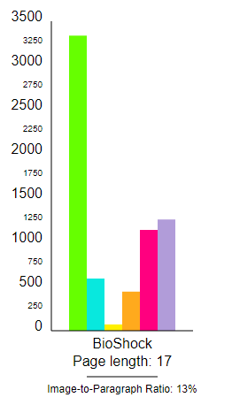
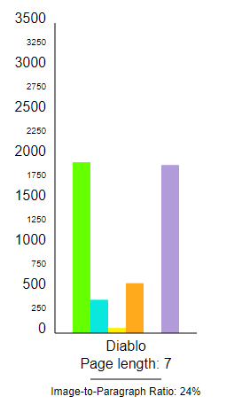
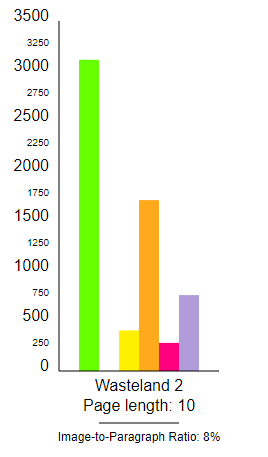
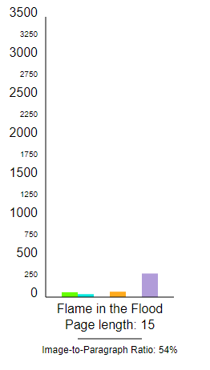

For this project, we currently have four different game pitch documents for you to view and compare how the different companies explained their core elements. Each of these elements will be highlighted a certain color, and the legend will be provided at the side of each page.
Remember, if you would like to see our code as well as the original source documents, please visit our GitHub repo!
First person action horror from the creators of System Shock 2 and Freedom Force.
Wasteland 2 is a multi platform strategy turn based rpg that incorportates team dynamic skills and abilities to defeat enemies in the wasteland.
Diablo is a role-playing game created by Condor, Inc and released in 1996. This document, made in 1994, was the original pitch for the game to describe elements such as gameplay, marketing, and development.
The Flame in the Flood is a wilderness survival game in which a girl and her dog travel by foot and by raft down a procedurally-generated river. Scrounge for resources, craft tools, remedy afflictions, evade the vicious wildlife and, most importantly, stay healthy in a dangerous wilderness.
We wanted to look at how many words from each document were used to explain each game pitch element. Surprisingly, we had up to over 3,000 words used for a single element in one document, but we also had a few documents that didn't use an element at all, such as Flame in the Flood having nothing about Non-playable Characters.
Overall, BioShock had the most amount of content of any documents, but they also had the highest amount of pages, 17 (the full document has 20, but the one available to the public has only 17). Diablo and Wasteland 2 were the most similar, in terms of content and page length. Flame in the Flood had the least amount of content, but there's a simple explanation for this: illustrations.
Flame in the Flood was very unique in its use of illustrations to explain the game concept, so while it has a decent page length, it has very few words in the document itself. To show this visually, we included in our graphs an image to paragraph ratio to clearly represent how visual Flame in the Flood was compared to its wordy counterparts.
These graphs were made using SVG, and the code for these files, as always, is available on our GitHub repo.
|  |  |  |  |